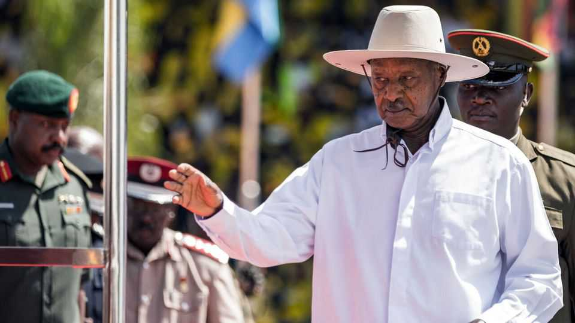

Yoweri Museveni’s decline is putting Uganda on a terrifying path
It faces the prospect of a worse despot or a messy power struggle

Sep 3rd 2026
UGANDA HAS never been an easy place to be a dissident. Since taking power at the head of a rebel army 40 years ago, Yoweri Museveni, the president, has restored order to a country drenched in blood, overseen robust economic growth and ruthlessly suppressed challenges to his rule. Of his two main opponents, one, Bobi Wine, lives in exile. The other, Kizza Besigye, is in jail and on trial for treason; in July he collapsed in court. In January Mr Museveni won a sham election marred by thuggery and ballot-stuffing.
Yet as the president, who is 81, grows frailer, Ugandans have begun to worry less about what he will do next, and more about what will happen when he is gone. As potential successors jockey for position, Uganda is a reminder of how nasty things can get when an ageing autocrat starts to lose his grip.
Once known for punishingly long work days, Mr Museveni has lately been spending less time at the office. He has cancelled engagements at short notice and appeared shaky in public. Stunts to demonstrate youthful vigour, such as a brief jog down a red carpet during last year’s election campaign, have fooled nobody.
As the leader fades, those around him are stepping up. Salim Saleh, Mr Museveni’s brother, is thought to handle much of the day-to-day governance from behind the scenes. Other relatives have increased their influence, too. Most worrying is Muhoozi Kainerugaba, the president’s son and head of the army. He has called himself the future president and a descendant of Jesus. As he throws his weight around, repression in Uganda is growing more intense and less predictable.
General Kainerugaba is notorious for his unhinged (and often quickly deleted) social-media posts, ranging from boasts about his sexual appetite to ethnic slurs and threats to kill or castrate opponents. His father used to curb his antics. One post in 2022—in which the general said it “wouldn’t take us, my army and me, 2 weeks to capture Nairobi”—briefly got him sacked from his army position. (Mr Museveni apologised to Kenya, a friendly, bigger neighbour on whose ports Uganda relies, for the unprovoked threat to its capital.)
As he ages, though, the president seems less able to rein in his son. In June the general sent the army to occupy Uganda’s biggest private media outfit. (It reopened after weeks of negotiations.) He has ordered the abduction of dissidents. In late August he had his men kidnap an associate of his own brother-in-law, gloated over the man’s mistreatment and threatened to arrest the brother-in-law, too.
What will happen once Mr Museveni leaves the scene? Even government insiders have started talking darkly of a return to the days of Idi Amin, a mass-murdering military dictator in the 1970s. That is not likely, but the future still looks bleak. The general could take over from his father and impose a capricious, vengeful and ethnically charged despotism on Uganda. He could also exacerbate the conflict in the east of the neighbouring Democratic Republic of Congo, where Uganda has meddled in the past. He has a close relationship with Congo’s main enemy, Rwanda.
Others in Mr Museveni’s inner circle and in the armed forces may try to stop his errant heir. A power struggle or even a violent split in the army might ensue. Some younger officers are loyal to the general; others are appalled by him. Veterans of the civil war are devoted to the father but wary of the son.
In theory, the passing of an autocrat could create space for free elections that Mr Wine or Mr Besigye might even win. In reality, that is unlikely. Mr Museveni came to power at a time of democratic resurgence, when many other African countries ditched military dictatorship for multiparty democracy. Back then, Western donors sometimes used their influence to promote human rights.
Now, by contrast, coups occur with impunity and plenty of leaders who won power democratically are looking for undemocratic means to hang on to it. Uganda’s plight should serve as a warning to its peers: without real elections to refresh the faces at the top, expect trouble as autocrats age. ■